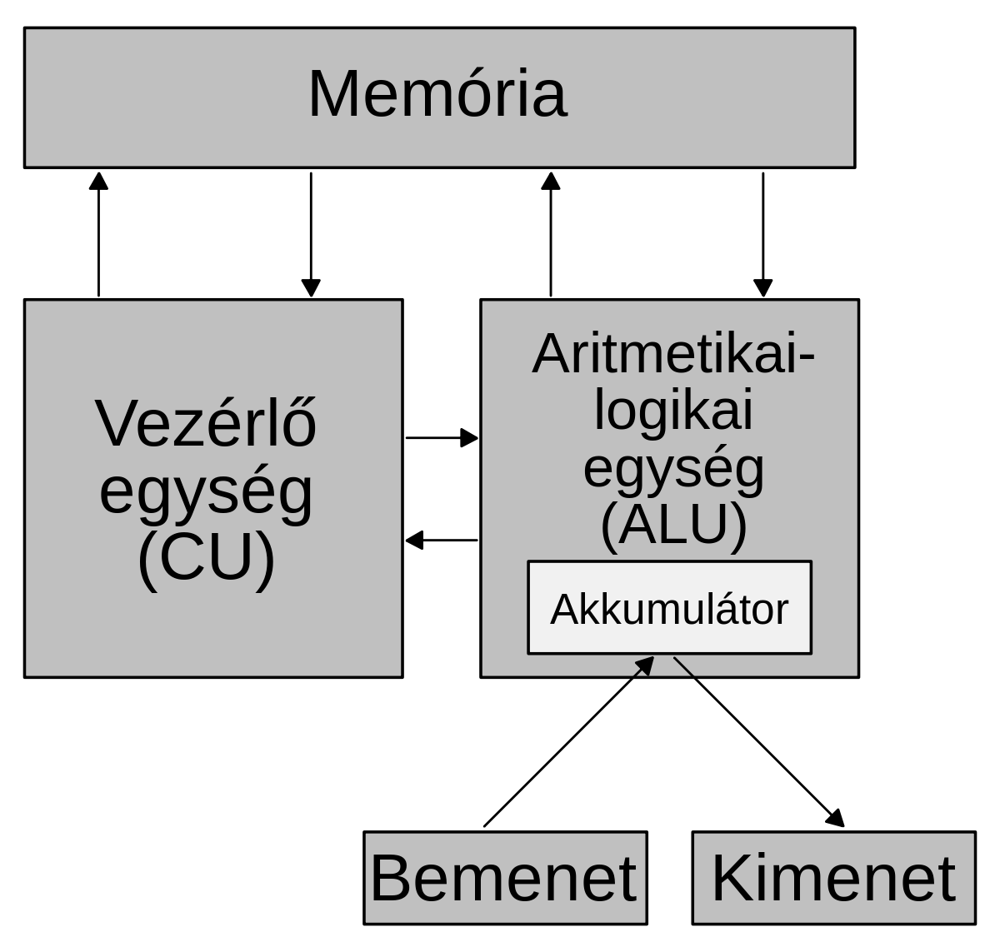

Neumann-elvek a számítógép felépítésében és működésében
A Neumann-elvek története
Neumann János 1944-ben találkozott az ENIAC egyik építőjével, Herman Goldstine matematikussal. Ekkor említette Goldstine neki, hogy dolgoznak egy olyan számítógépen, amely másodpercenként több mint 300 szorzás elvégzésére lesz képes. A gép felkeltette Neumann érdeklődését és elutazott Philadelphiába, a Moore intézetbe, ahol a gépet építették. Ezzel a látogatással elkezdődött az együttműködés Neumann János és az ENIAC építői között, amelynek az eredménye az EDVAC terveinek elkészítése lett. Az EDVAC lett volna a világ első Neumann-elvű számítógépe, de a gépet tervező csoportból többen is kiléptek a gép készítése közben emiatt az EDVAC építése lassan történt és csak 1951-ben készült el, amikor már több Neumann-elvű, az EDVAC-nál fejlettebb gép is működött. Az első ilyen gép az Angliában készített EDSAC volt, de Neumann is megépítette IAS néven a saját Neumann-elvű gépét, illetve Eckert és Mauchly is elkészítette az UNIVAC-ot, a világ első sorozatgyártású számítógépet.
A számítógép felépítése
Az első Neumann-elvű gépek
Neumann elképzelése szerint a számítógép összetevőit három csoportba lehet elkülöníteni.
- A központi egység, ez felelős a számítógép működtetéséért. A vezérlőegység feldolgozza a programok utasításait, az aritmetikai és logikai egység pedig végrehajtja a matematikai és logikai műveleteket.
- Az operatív tár, ami tartalmazza az éppen futó programok utasításait és az éppen használatban lévő adatokat. A központi egység innen olvassa ki a következő utasítást, és ide írja a számítások eredményét.
- A ki- és bemeneti egységek, amik teremtik meg a kapcsolatot a felhasználó és a számítógép között. Lehetőséget adnak az utasítások és adatok bevitelére, valamint megjelenítik a számítások eredményét.
A modern számítógépek
Az első Neumann-elvek alpján írt gép megépítése óta eltelt több, mint 70 évben a számítógépek felépítése sokat változott, de alapjaiban hasonló maradt. Néhány jelentős változás:
- Az összetevők között megjelent egy negyedik csoport, a háttértárak.
- Jelentősen megnövekedett a perifériák száma és fajtája.
- Megjelentek olyan vezérlőchipek és társprocesszorok, amik a központi egységet tehermentesítik különféle feladatok alól.
- A központi egység az operatív tártól függetlenül kapott egy memóriát.
- Elterjedtek a többmagos központi egységek.
A Neumann-elvek
A számítógép teljesen elektronikus működésű
A 19. században és a 20. század elején ugyanis sokan kísérleteztek mechanikus gépekkel. Az elektronikus központi egység és operatív tár azonban gyorsabb, kisebb és kevésbé sérülékeny, mint a mechanikus megoldások. A mozgó alkatrészeket ugyan nem lehet teljesen kizárni, de a fejlődés abba az irányba tart, hogy ezek száma csökkenjen. Jó példa erre az úgynevezett flashmemóriák sikere, amik nemcsak a szalagos, de lassan a lemezes háttértárakat is kiszorítják.
A számítógép az utasításokat sorban hajtja végre.
A központi egység egyszerre egy utasítást olvas ki a memóriából, az adatokat pedig bitenként dolgozza fel. Ez az elv a többmagos processzorok korában úgy módosult, hogy a magok továbbra is sorosan működnek, viszont egymástól függetlenül egyszerre különböző programokat is futtathatnak, így a központi egység párhuzamosan több feladatot is végezhet.
A számítógép univerzális működésű.
A Nemcsak egy adott feladatot tud elvégezni, hanem beprogramozható különféle feladatok elvégzésére. Alan Turing (Neumann kortársa) elmélete szerint ha egy gép el tud végezni néhány alapműveletet (pl.: összeadás, összehasonlítás, másolás), akkor bármilyen bonyolult problémát meg tud oldani. A programozó feladata az, hogy a problémát alapműveletekre bontsa, amiket a számítógép elvégez, és a folyamat végén megszületik a bonyolult számítás eredménye.
A számítógép a tárolt program elvén működik.
Az éppen futó programok utasításait és az éppen használatban lévő adatokat egy közös tárban (memória) kezeli. Így automatikusan be tudja tölteni a következő utasítást, és ideiglenesen tárolni tudja a számítások közben keletkező részeredményeket is. Ezek következtében kevesebb felhasználói beavatkozásra van szükség, és a számítási sebesség jelentősen megnövekszik.
A számítógép kettes számrendszerben működik.
Azaz minden adatot és utasítást bitsorozatok (egyesek és nullák) formájában kezel. A mindössze kétféle érték nemcsak a feldolgozást, hanem a tárolást és a továbbítást is megkönnyíti, ugyanis könnyű mérni, hogy az áramkör egy adott pontján egy időpillanatban éppen van jel (1), vagy nincs (0).